Python driver: the main script and its JVM launcher
component index
For spark-submit --master yarn ... orders.py 2026-11, one Python interpreter runs
orders.py for this driver attempt. It reads arguments, executes ordinary Python code,
builds Spark operations, and receives action results or exceptions. It is not the
driver JVM or a Python worker processing an executor partition.
This classic PySpark launcher is org.apache.spark.deploy.PythonRunner, not the
executor-side org.apache.spark.api.python.PythonRunner or Spark Connect.
Flow at a glance
- Main script: Defines a function to map over an RDD.
- Python driver: Serializes the function and its captured values.
- Python worker: Applies that function to records in its partition.
Key distinction: The main script runs once per driver attempt, not once per partition.
Show the animated flow

Invocation contract
| Invoker |
Input to deploy.PythonRunner.main(args: Array[String]) |
Where the script runs |
SparkSubmit, client mode |
Local primary script, local --py-files list, then application arguments |
Child of the submit-side JVM, on the client host |
| AM user thread, cluster mode |
Localized primary .py name, "", then application arguments. The empty second argument is intentional: the YARN client already prepared the launch PYTHONPATH. |
Child of the AM/driver JVM, in the AM container |
The child sees the script as sys.argv[0] and 2026-11 as sys.argv[1]; the dependency
list is a launcher argument, not a script argument. Compare client selection
with cluster submission, AM argument construction, and
YARN's localized Python path.
What the launcher and script do, in order
- Choose the executable. The JVM checks in order:
spark.pyspark.driver.python,
spark.pyspark.python, PYSPARK_DRIVER_PYTHON, PYSPARK_PYTHON, then python3.
That interpreter must exist where the child will run. The runner normalizes local
paths: readable loose .py dependencies go into an importable directory;
archives can be path entries themselves.
- Prepare the child. The runner starts the authenticated local
Py4J gateway, waits for its port, then builds the command
ProcessBuilder([pythonExec, script, ...appArgs]). Its PYTHONPATH combines resolved
dependencies, Spark's Python path, and the inherited path. The child environment
enables unbuffered output and supplies PYSPARK_GATEWAY_PORT and PYSPARK_GATEWAY_SECRET.
The script attaches to this JVM rather than launching another.
- Run the application. The Python builder returns a SparkSession
backed by a JVM session and application context. For example,
orders.where("status = 'PAID'").count() calls _jdf.count() and returns a
Python int. For a Python RDD function, by contrast, the driver serializes the function
and its serializers into a SimplePythonFunction for distributed work.
It does not rerun the main script for each partition.
- Propagate completion. The JVM merges the child's stderr into stdout, forwards it
to its own stdout, and waits. Exit
0 lets main return Unit; a nonzero
status becomes SparkUserAppException(exitCode). The runner closes the gateway in
finally. In cluster mode the AM handles the user-thread outcome; before
registration its early failure rule can replace the child's exact exit code.
Diagnostic: an import fails on the driver
If orders.py imports order_rules before constructing a session and raises
ModuleNotFoundError, find the first Python traceback in the AM container's stdout
(cluster) or submit process output (client). Check the chosen driver interpreter and
distributed module/archive on that host. Changing executor dependencies alone cannot fix
this failure: no partition has executed. A later AM message about context initialization
or user exit describes the consequence, not the missing module.